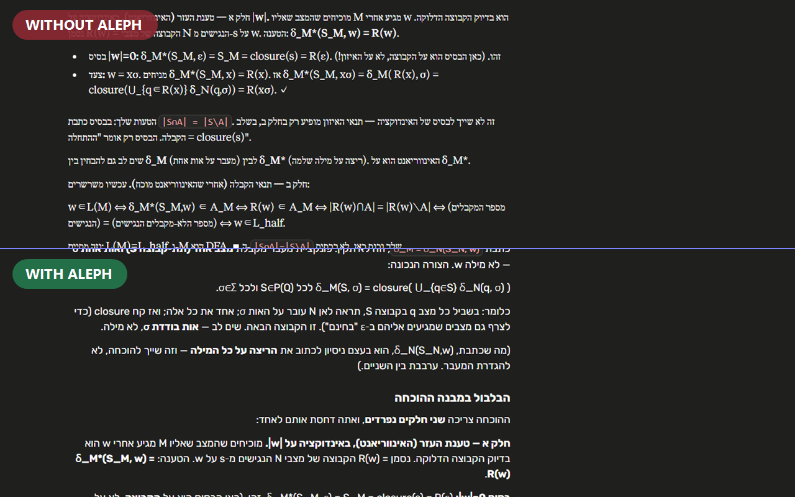
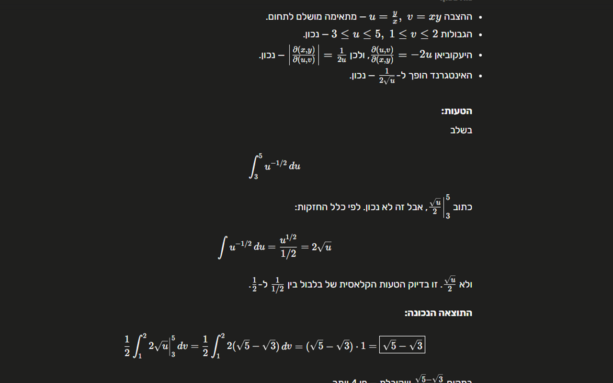
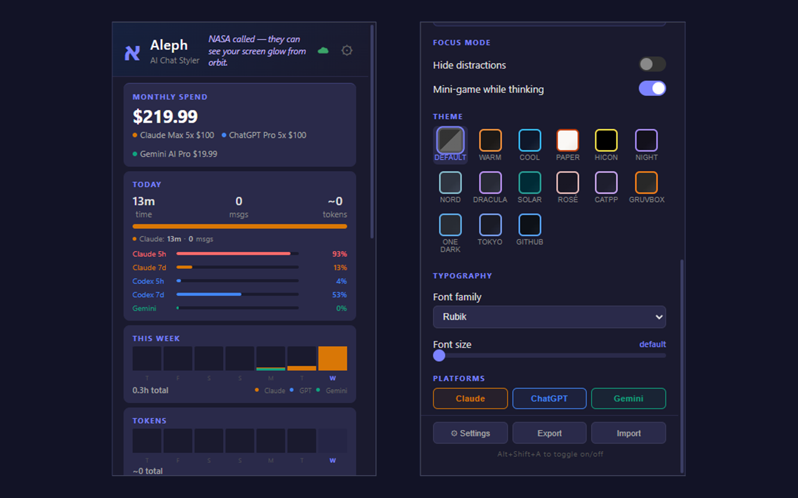
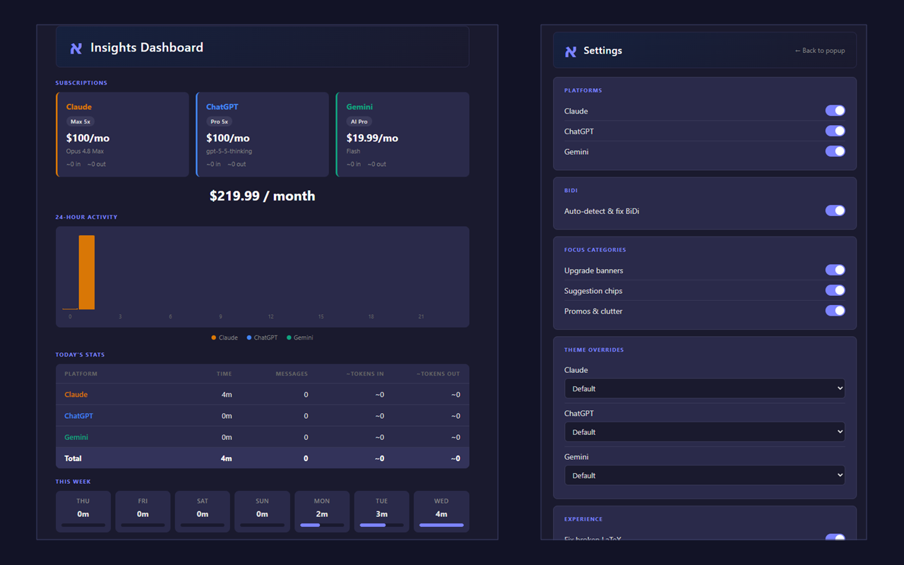
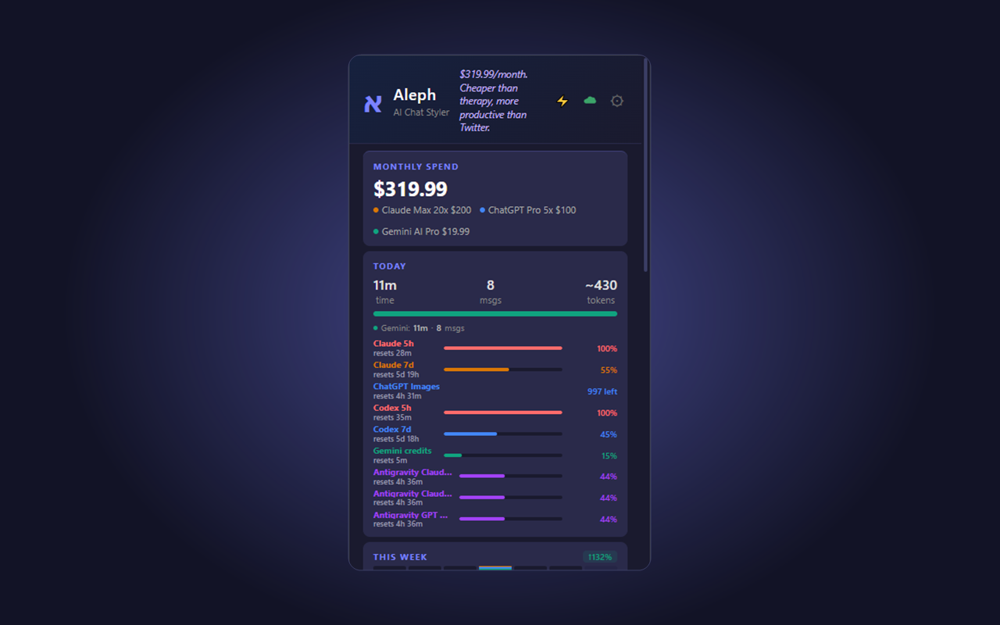

Direction fixing
Per-element Hebrew and Arabic-script detection, live while answers stream.
The open-source Chrome extension that makes Hebrew and Arabic-script AI chats readable across Claude, ChatGPT, and Gemini.
Hebrew, Arabic, Persian, and Urdu can fall apart when they mix with English words, code, or math. Aleph detects direction from the actual characters on the page, fixes the affected elements, and keeps math and code isolated left-to-right.

Without Aleph, Hebrew and Arabic-script replies arrive scrambled — punctuation on the wrong side, numbered lists broken apart. Aleph fixes the direction in place, without forcing English, code, or math the other way.

Aleph marks Hebrew and Arabic-script text at the element level instead of forcing an entire page into one direction. That keeps formulas, inline variables, code blocks, bullets, and English passages readable.
Aleph also gives each AI chat the same readable shape: themes, fonts, focus mode, smooth streaming, and a usage dashboard that makes subscriptions and quota easier to understand.
Per-element Hebrew and Arabic-script detection, live while answers stream.
Fourteen themes, custom fonts, code styling, line height, spacing, and chat width.
Hide upgrade banners, suggestion chips, promos, and other chat clutter by category.
Track local time, sends, estimated tokens, subscription spend, and provider quota snapshots.
Toggle platforms, switch themes, check quota, open settings, and keep the reading experience consistent without leaving the chat surface.

The dashboard shows subscriptions, daily activity, and weekly usage. Settings are explicit, exportable, and built from the same controls the extension uses in production.

See your combined monthly spend and live quota meters for Claude, ChatGPT, Codex, Gemini, and Antigravity — so you know where your quota went before you hit the wall.

Aleph does not collect telemetry, analytics, or conversation text. Optional Google sign-in syncs only settings and aggregate daily usage summaries to your own account. The code, sync rules, and privacy policy are public.
Install from the Chrome Web Store, or load the repository as an unpacked extension while developing.